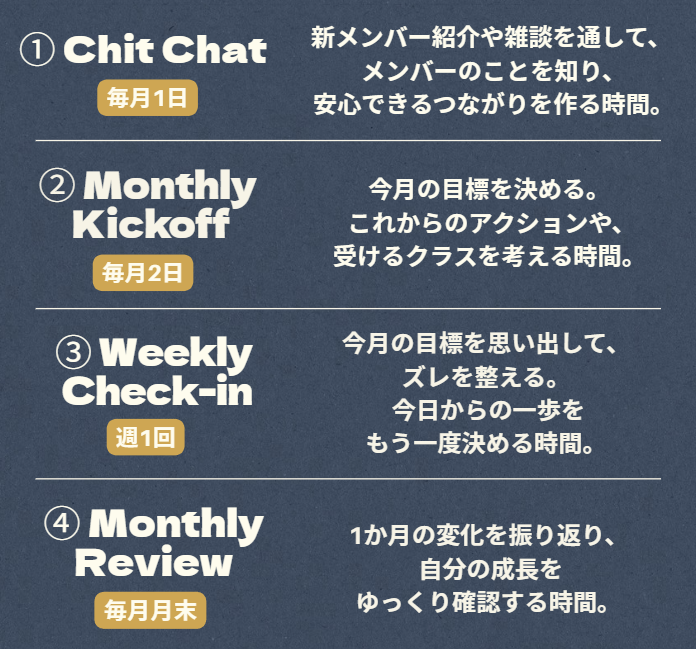
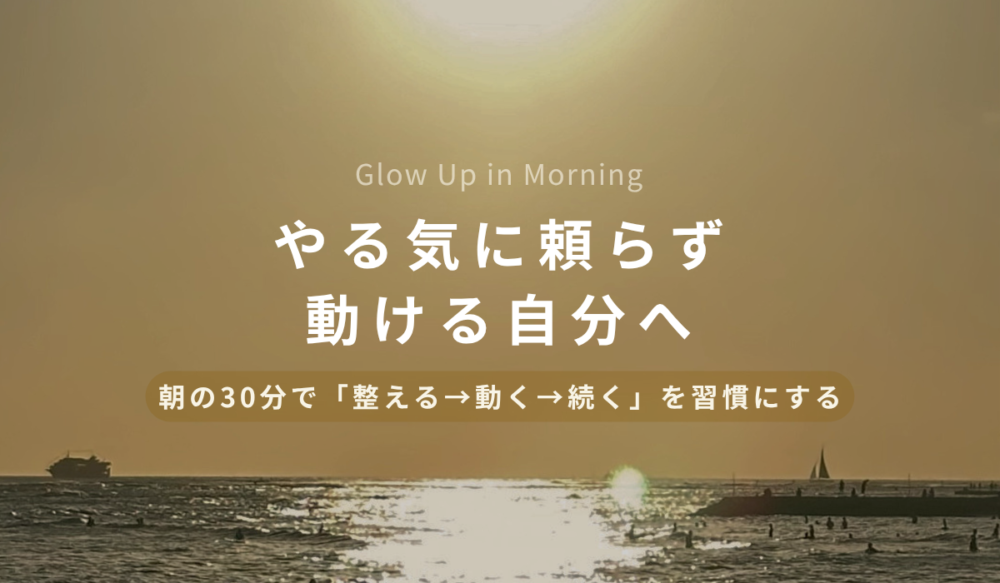
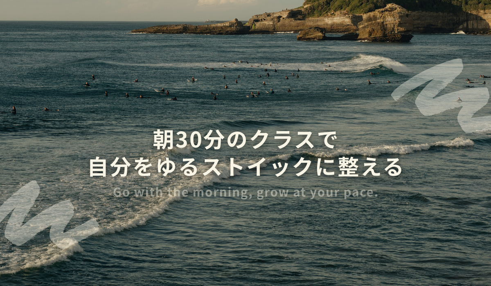
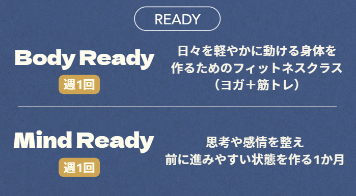
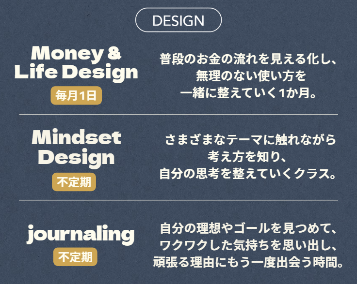
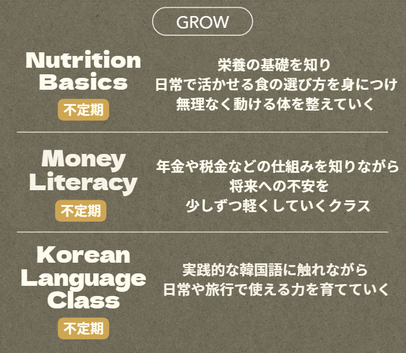
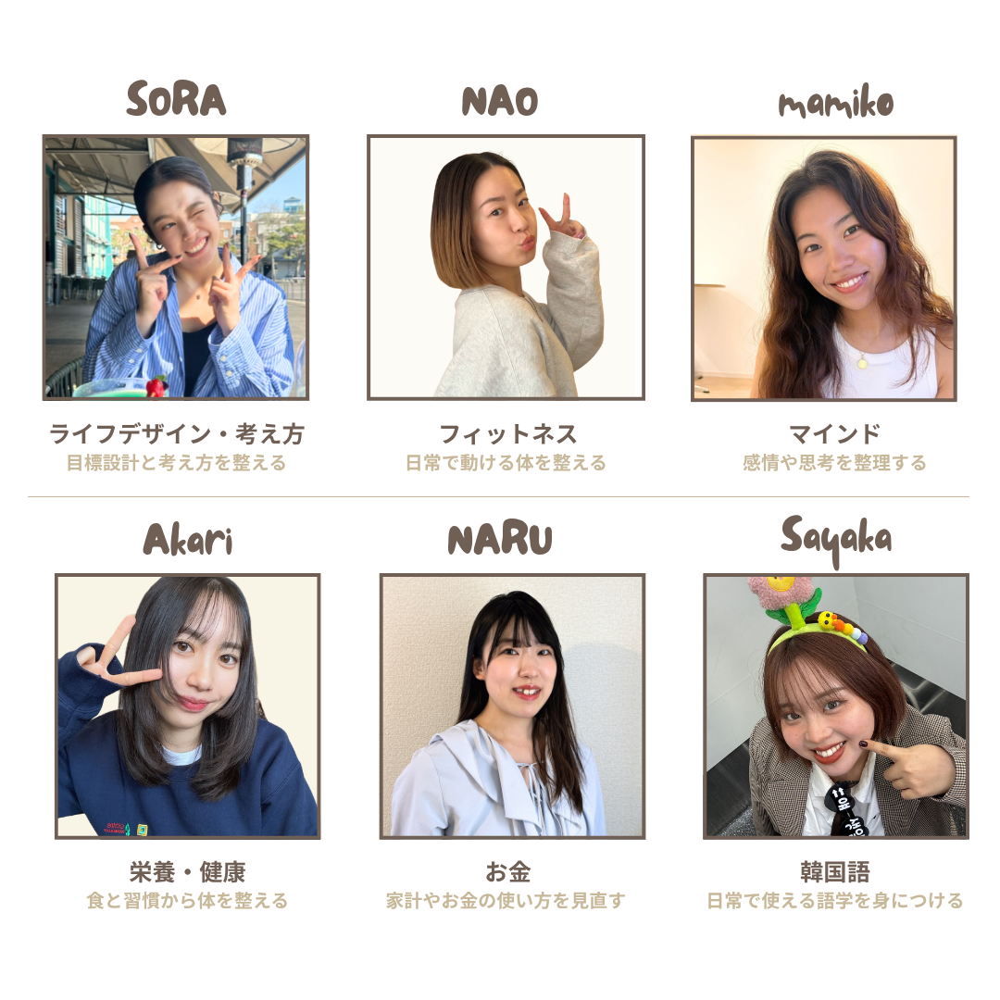

Glow Up in Morning
5月開始・4月末申し込み開始
インスタグラムでご案内します
GLOWMとは？
やる気に頼らなくても
自然と行動が続く場所
変わりたいと思っているのに、
動けない日があったり。
続けたいのに、
気づいたら止まってしまったり。
やる気がないわけじゃないのに、
なぜか続かない。
でもそれ、
意志が弱いからじゃない。
ただ「続く流れ」がないだけ。
朝の30分で
「整える→動く→続く→変わる」
流れを作る朝活コミュニティ
この流れの中にいることで
- やる気に頼らず動ける
- 気付いたら続いている
- 少しずつ自信がつく
そんな状態に変わっていく
GLOWMの仕組み
GLOWMは1か月サイクルで進みます
毎月メンバーと一緒に
「目標を決める → 小さく動く → 振り返る」
を繰り返します
- 月初：目標とやることを決める ↓
- 月中：少しずつ動く ↓
- 月末：振り返る
この流れがあることで、
無理なく続けられるように設計されています。
目標ややることは、みんなそれぞれ。
自分で決めて、自分のペースで進めます。
- ☀️例えばこんなことでもOK
- スキルをつけたい
- 自分のキャリアを見直したい
- パラレルキャリアを始めてみたい
- 夏までに痩せたい
- 家計管理をちゃんとしたい
- インスタ発信を始めたい/続けたい
- ジャーナリングを続けたい
- 何かしら勉強したい
- 朝活を始めたい…etc
こんな気持ち、ありませんか？
- 何か変えたいと思っている
- きっかけがあれば動けそう
- やる気がある日にまとめてやるけど、結局続かない
- 朝の時間をもう少し大切にしたい
- 同じ方向を向いている人とつながりたい
その一歩をGLOWMで始めてみませんか？

GLOWMのクラス
COREで流れを作りながら
今の自分に合うものを自由に選べます
まずはここから！
全員に参加してほしいベースのクラス
COREに参加することで、無理なく行動が続けられるようになります
【READY】体と心を整え、動ける状態をつくる

【DESIGN】お金や考え方など、生活や行動を整える

【GROW】知識やスキルに触れ、可能性を広げる

自分の目標や興味に合わせて
自由に選べるクラスです
👇Customは更に3つに分かれます
└ READY ｜整える
└DESIGN ｜見直す
└GROW｜広げる
※↑クリックすると詳細を確認できます
※内容は今後アップデートされる場合があります
GLOWMのLeaders
Leaderが各クラスを担当します
Leaderは先生ではなく、
【少し先に試してきた人・経験してきた人。
同じ目線で、一緒に流れをつくる人です。
はじめての方でも安心して参加できるよう、無理なく、やさしくサポートします。

Leaderとしてのかかわり方
GLOWMに参加する中で
Leaderとして関わることもできます
同じ目線で、流れをつくる側にまわること。
やってみたい気持ちが出てきたタイミングで、チャレンジすることができます。
募集はコミュニティ内でご案内します。
GLOWM参加後のイメージ
やろうと思っていたことを始められ、
前に進んでいる実感が出てくる
🌅：朝起きて、今日のクラスに参加する
📝：少し整って、目標ややることが一つ決まる
🌱：その小さな一歩が、毎日積み重なる
🚶♀️：振り返ると、前に進んでいる実感が持てる